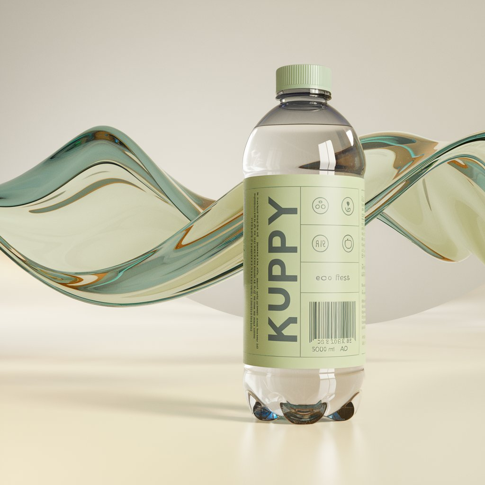
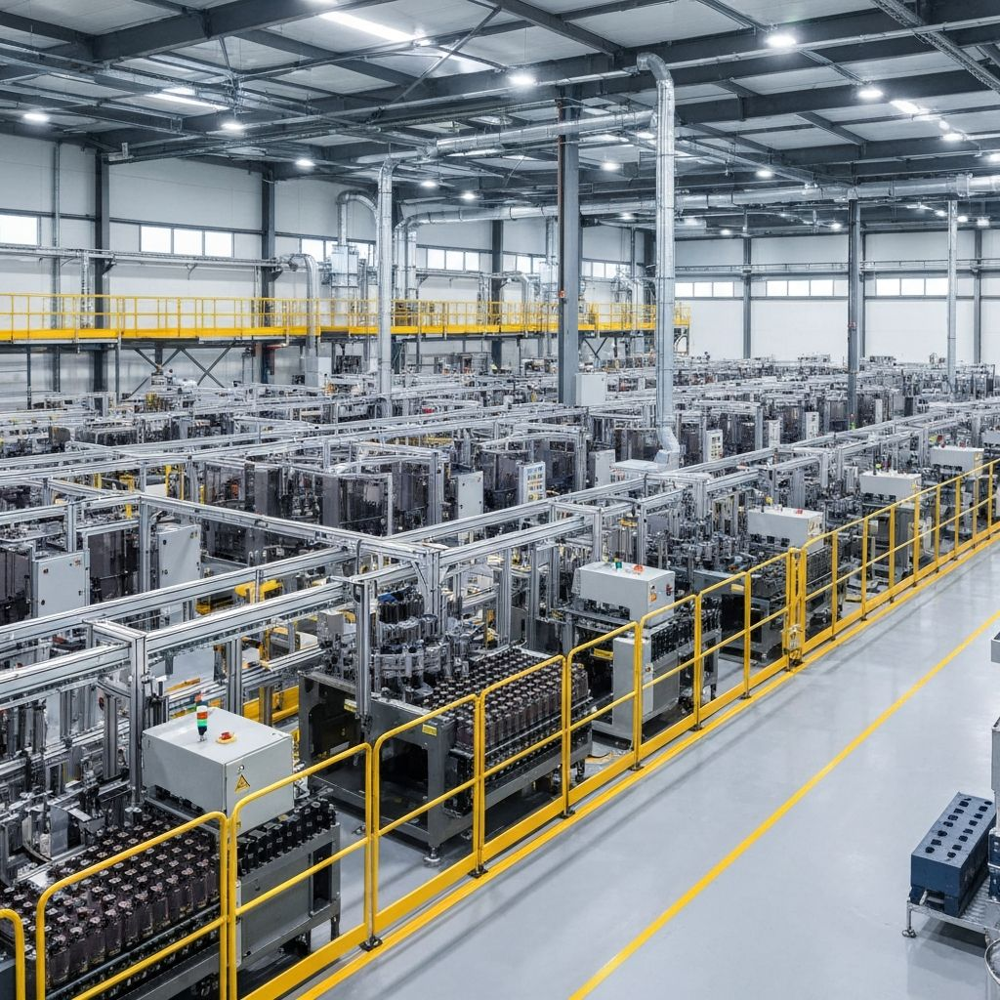

Revolutionary biodegradable innovation that transforms how we drink. Plant-based, sustainable, and certified safe.

KUPPY bottles are crafted from PLA (Polylactic Acid), derived from renewable resources like sugarcane and corn. Unlike traditional plastic that takes centuries to decompose, KUPPY naturally breaks down in 6-12 months in industrial composting facilities.
Plastic in our oceans annually
Time for plastic to decompose
Single-use bottles used yearly
Landfill plastic from packaging
Single-use plastic bottles are one of the biggest environmental challenges of our time. They clog our oceans, leach into our soil, and persist for centuries. The solution? KUPPY.
We source sugarcane and corn from certified sustainable farms.
Raw materials are converted into Polylactic Acid through fermentation and polymerization.
PLA is melted and molded into our signature bottle design using precision machinery.
Every bottle passes rigorous safety and sustainability certifications including FDA approval.

Reducing aviation's environmental footprint with sustainable beverage solutions.
Eco-friendly options for travelers on the move worldwide.
Safe, certified solutions for healthcare and wellness facilities.
Preserve natural beauty while serving visitors sustainably.
Leading by example with official eco-friendly policies.
Compliant with the strictest environmental regulations.
| Aspect | Traditional Plastic | KUPPY Bottles |
|---|---|---|
| Material Source | Fossil fuels (petroleum) | Renewable plants (sugarcane, corn) |
| Decomposition Time | 450+ years | 6-12 months |
| Carbon Footprint | High emissions | 65% lower emissions |
| Ocean Safety | Toxic microplastics | Breaks down naturally |
| Food Safety | BPA concerns | FDA certified safe |
| Sustainability | Non-renewable resource | Renewable & compostable |
KUPPY bottles naturally break down in months, not centuries, returning safely to the earth.
Each KUPPY bottle prevents persistent plastic waste from accumulating in landfills and oceans.
Our manufacturing process offsets emissions through renewable energy and sustainable sourcing.
Protect natural destinations while supporting eco-tourism initiatives worldwide.